One task per page
Appointment, treatments, notes and X-ray each get their own focused page instead of competing on one screen.
Case study 02 · Healthcare
Appointments, notes and X-rays for adults aged 65 and over. One sitting, no phone call, no asking family for help.
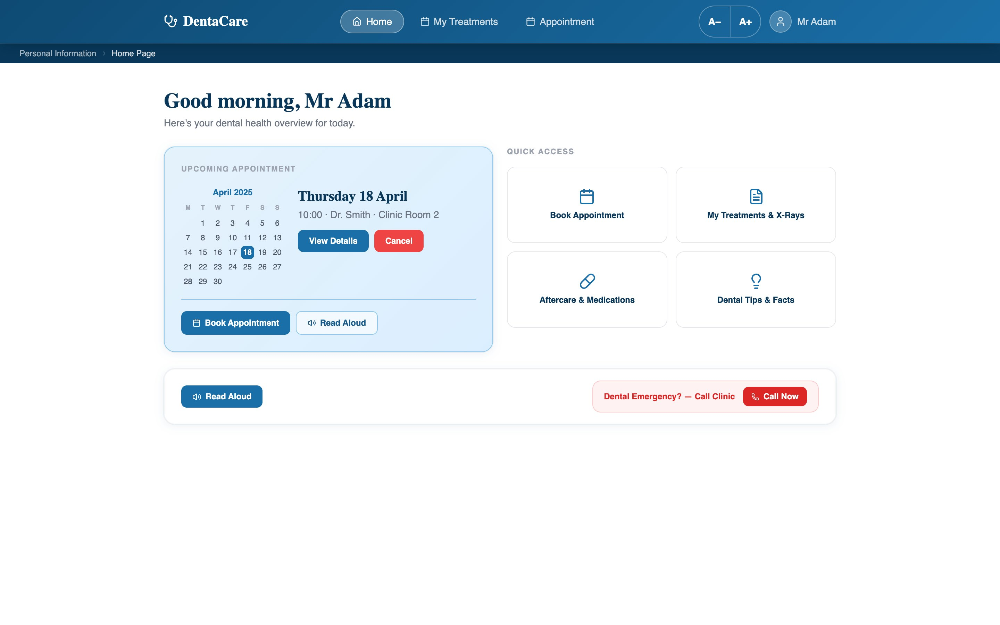
When a health website is hard to read, the cost is not frustration. It is a missed appointment or aftercare that is misunderstood.
Balakrishnan et al. on type, contrast and dexterity. Dixon et al. on working memory and extra steps.
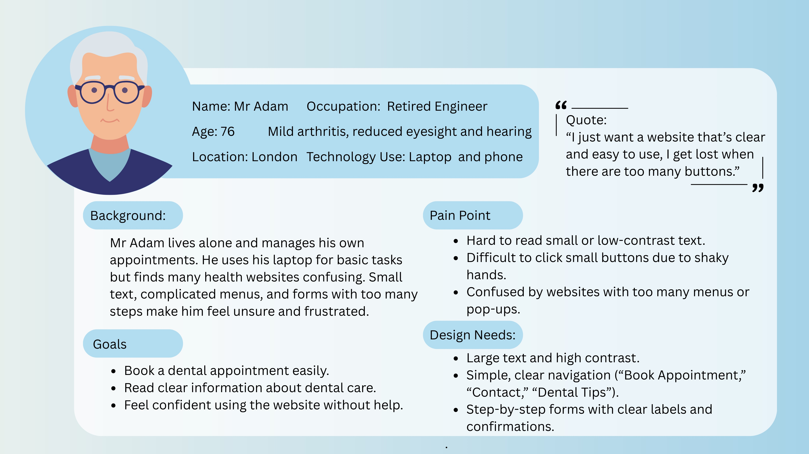
I just want a website that’s clear and easy to use. I get lost when there are too many buttons.
He manages his own appointments. Small buttons, low contrast and crowded screens are what lose him.
What gets in the way
What the interface must do
Filter by principle to see which parts of the portal it shaped.
Appointment, treatments, notes and X-ray each get their own focused page instead of competing on one screen.
The full path is always visible, so users never need to remember how they got somewhere.
Primary actions are at least 40px tall with generous padding and space around them to prevent accidental presses.
Cancelling an appointment needs explicit confirmation that describes exactly what will happen.
Clinical notes show the dentist’s name, the date and the treatment, because older users question information without credibility cues.
Four bounded quick-access tiles, and each one now opens its own page. Aftercare and Tips used to look clickable and go nowhere.
Key pages can be read out through the browser’s speech engine, at a slightly slower rate.
Text size changes on every page, not in a settings menu. The choice is remembered between visits. The buttons are 44px so they are easy to hit.
Lucide line icons replaced emoji. Every icon sits next to a text label, so nothing depends on interpreting a symbol.
Blue signals trust and clinical care. Navy on white gives strong contrast; red is kept for cancel and emergency.
The top-level flow stays linear, while confident users can zoom X-rays and filter treatments by month.
Back and Home Page sit in identical positions on every deep page, so their location is learnt once.
A Dental Emergency call button sits on the home screen, and notes pages offer Message Dentist and Call Clinic.
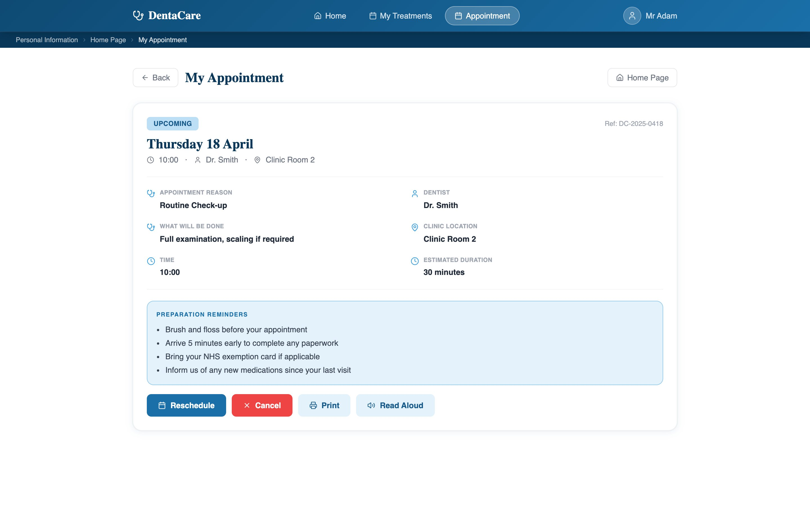
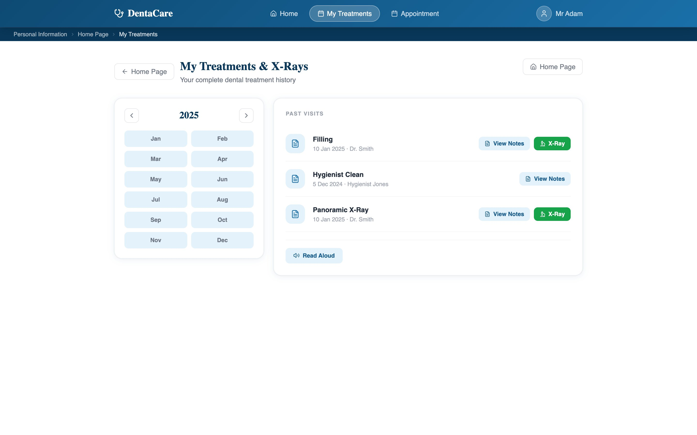
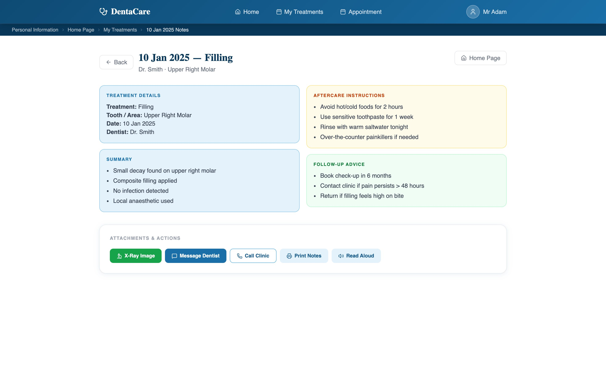
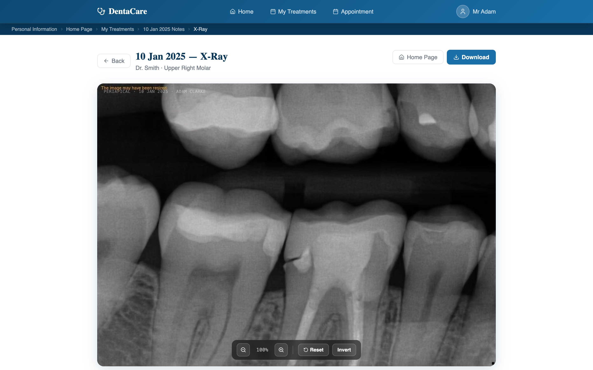
The upcoming appointment and a calendar lead the page, so the most time-critical information needs no scrolling. A− and A+ in the header change the text size on every page and remember the choice.
Reason, dentist, location, duration and a confirmation reference, plus reminders about how to prepare.
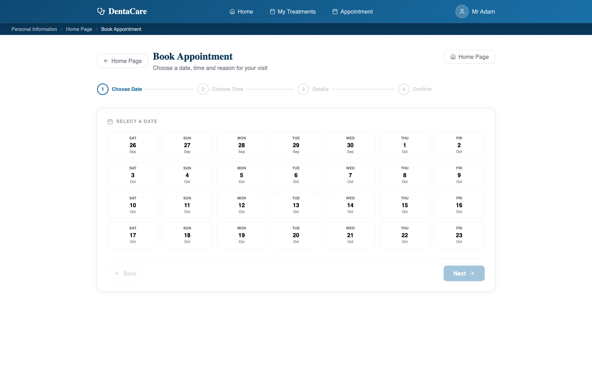
Booking breaks into clear steps with large choices, and ends with a confirmation reference.
A chronological list of past visits, narrowed by year and month without leaving the page.
Treatment, date and dentist up front, then summary, aftercare and follow-up advice in clearly separated blocks.
Zoom, invert and download an X-ray to share with another clinician. The toolbar uses 40px targets.
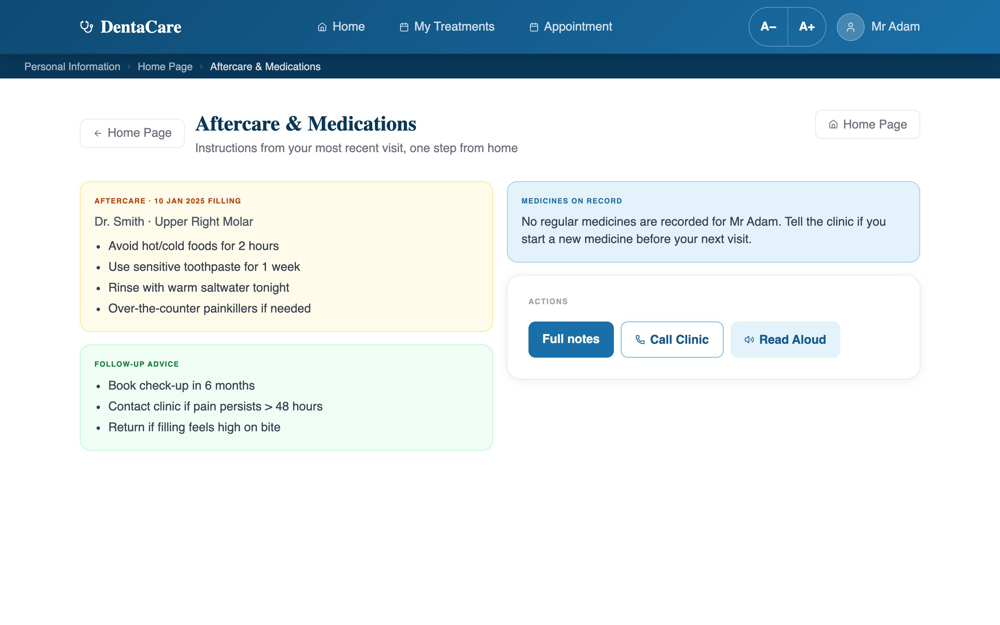
The Aftercare tile now opens the latest visit’s instructions, instead of sitting there looking clickable and doing nothing.
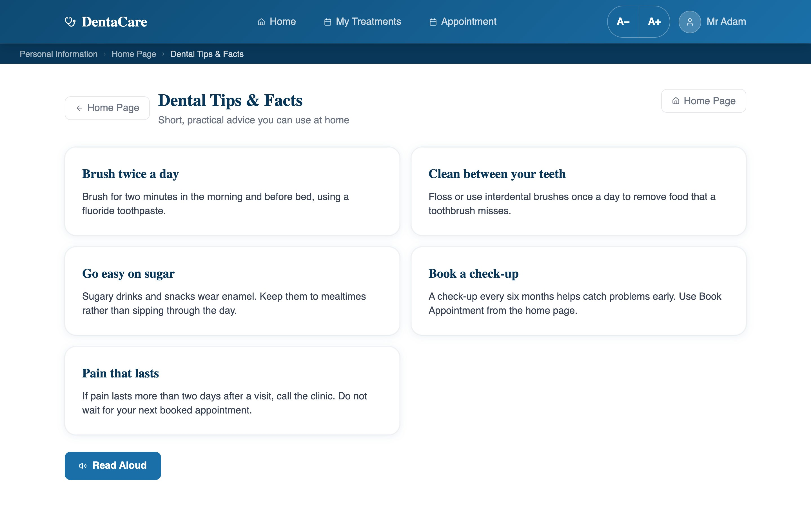
Five practical facts, one idea each, with Read Aloud. This tile also used to lead nowhere.
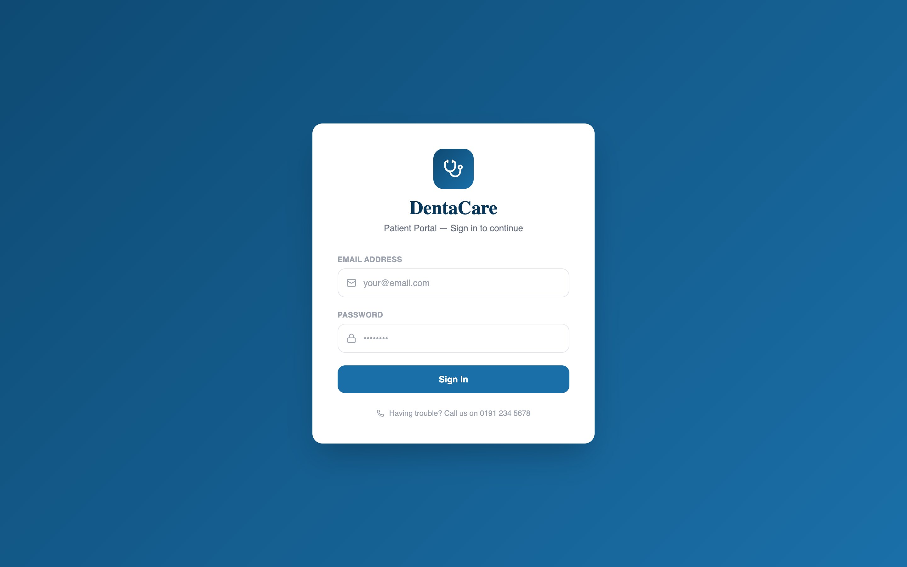
A simple two-field sign-in with a clear error message and the clinic’s phone number right below it.
Three product behaviours you can use right here. The Read Aloud text and speed match the real home page.
Good morning Mr Adam. You have an upcoming appointment on Thursday 18 April at 10:00 with Dr. Smith in Clinic Room 2.
Words highlight as they are spoken in browsers that report word positions.
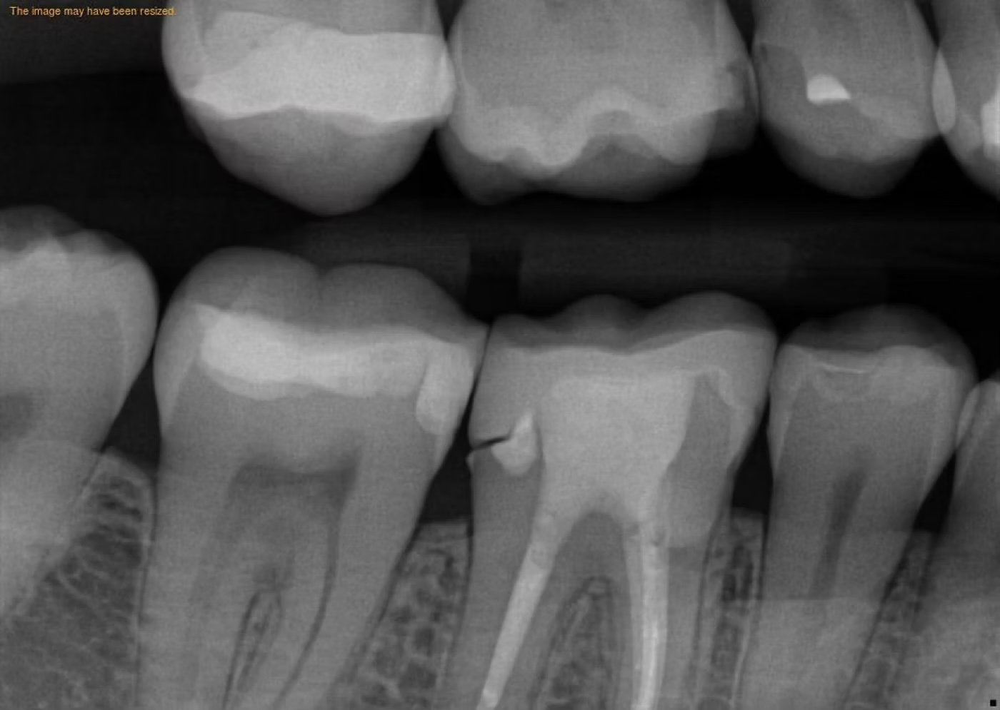
The first version used emoji on the home tiles and buttons. On reflection, three problems made them wrong for this audience:
They render differently everywhere. The same character can look different on an older device or browser than on the designer’s laptop.
They assume familiarity. Emoji conventions come from social media; older adults have less experience inferring meaning from them.
They carry the wrong tone. Informal, emotional symbols undermine the trustworthy, clinical feel that older users need from health information.
Lucide line icons replaced them everywhere: monochrome, identical on every platform, and always paired with a label.
Emoji: varies by device, informal
Line icons: consistent, calm, labelled
The wider design path, from structure to code:
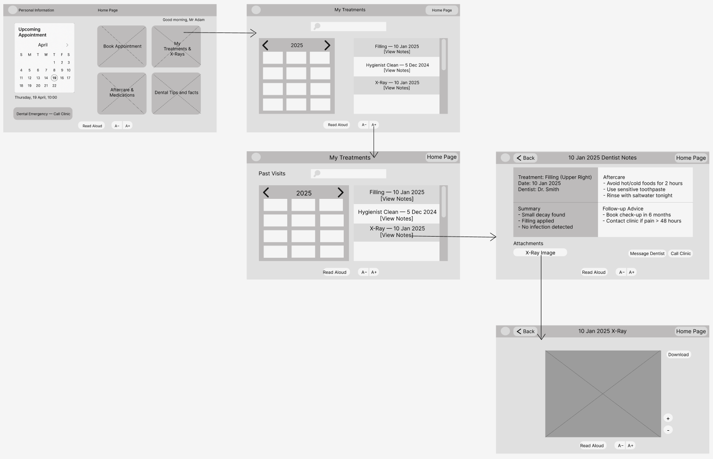
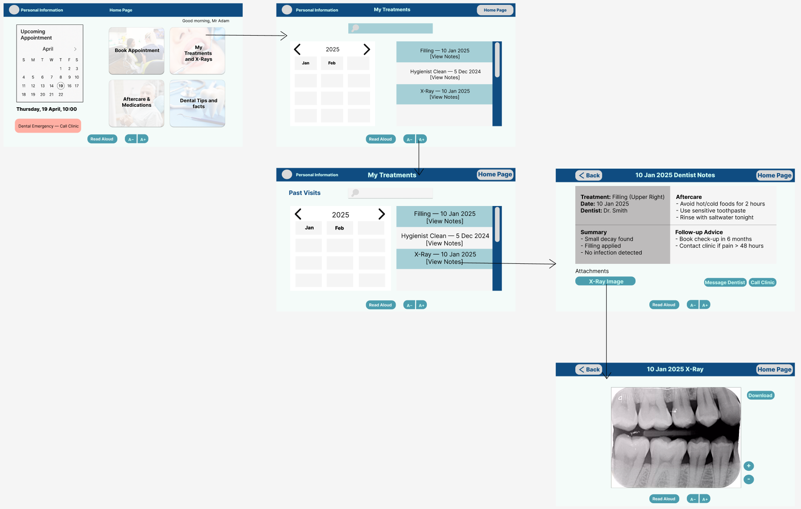
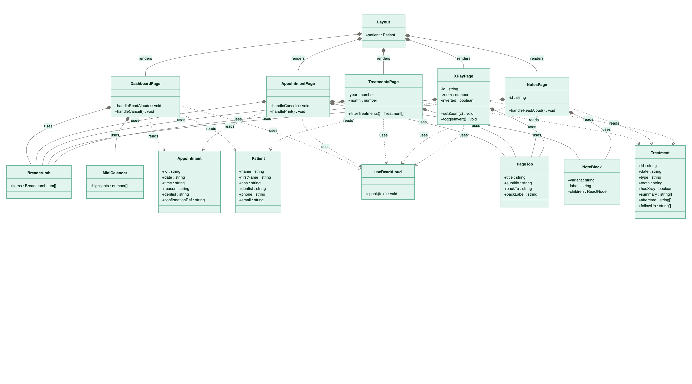
Layout, focused pages, reusable Breadcrumb, PageTop and NoteBlock components, and a useReadAloud hook.Not yet tested with older adults. DentaCare was completed in Term 2 and there was not enough time left to recruit, run and analyse sessions. The evaluation below is a structured heuristic review, which finds likely issues but does not replace observing real users.
| Heuristic | Evidence in the product | Result |
|---|---|---|
| H1 Visibility of status | Breadcrumb trail on every page; confirmation reference after booking | Pass |
| H2 Match the real world | Clinical language; calendar, document and phone icons map to their real referents | Pass |
| H3 User control | Back and Home Page on every deep page; confirmation before cancelling | Pass |
| H4 Consistency | Identical Back and Home placement; one primary action colour throughout | Pass |
| H5 Error prevention | Cancellation requires explicit confirmation | Pass |
| H6 Recognition over recall | Every icon labelled; breadcrumb shows the full path | Pass |
| H7 Flexibility | Read Aloud as an alternative to reading; A− and A+ on every page; month filter for confident users | Pass |
| H8 Minimalist design | Home shows only the next appointment and four tiles | Pass |
| H9 Recover from errors | Confirmation dialogs describe the action; empty states explain themselves | Pass |
| H10 Help | Read Aloud; preparation reminders on the appointment page | Pass |
Nielsen’s five-user benchmark is the clear next step, run with think-aloud tasks based on the three journeys.
Extend the home screen’s emergency call into a persistent banner, as designed, so help is never more than one press away.
Add a simple workload measure such as NASA-TLX to check that fewer steps actually feel easier.
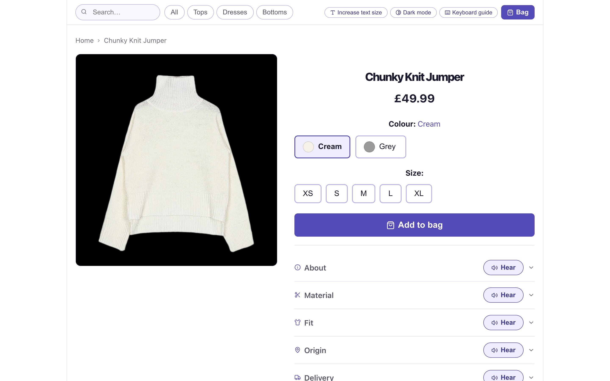